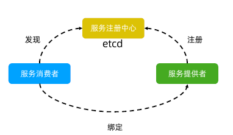
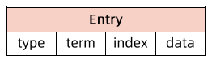
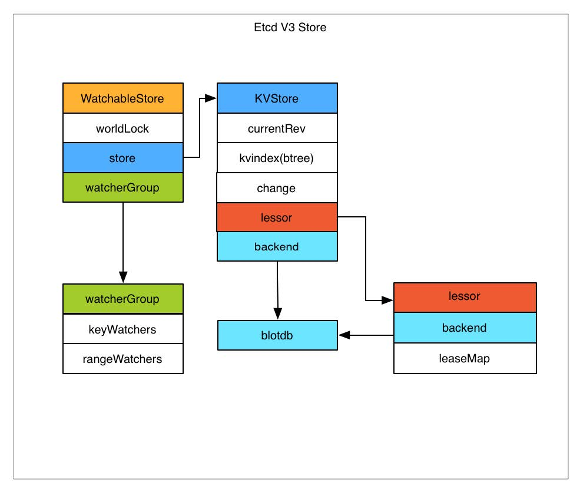
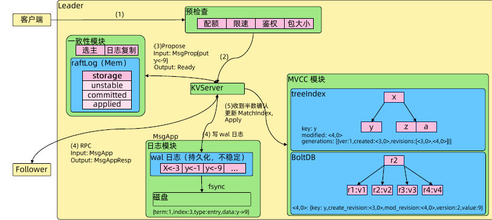
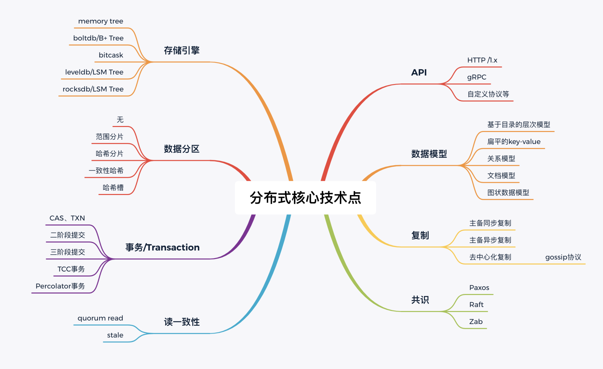

etcd
etcd 是 CoreOs 基于 Raft 开发的分布式 key-value 存储，可用于服务发现、共享配置以及一致性保障（如数据库选主、分布式锁等）。
在分布式系统中，如何管理节点间的状态一直是一个难题，etcd 像是专门为集群环境的服务发现和注册而设计它提供了数据 TTL失效、数据改变监视、多值、目录监听、分布式锁原子操作等功能，可以方便的跟踪并管理集群节点的状态。
- 基本的 kay-value 存储：将数据存储在分层组织的目录中，如同在标准文件系统中；
- 监测变更：监测特定的键或目录以进行更改，并对值的更改做出反应；
- 简单：curl 可访问的用户的 API（HTTP+JSON）；
- 安全：可选的 SLL 客户端证书认证；
- Key 的过期及续约机制，用于监控和服务发现
- 原子CAS（Compare And Swap）和CAD（Compare And Delete），用于分布式锁和 leader 选举。
服务注册与服务发现
-
强一致性、高可用的服务存储目录。
- 基于 Raft 算法的 etcd 天生就是这样一个强一致性、高可用的服务存储目录。
-
一种注册服务和服务健康状况的机制。
- 用户可以在 etcd 中注册服务，并且对注册的服务配置 key TTL，定时保持服务的心跳以达到监控健康状态的效果。

基础篇
Etcd 起源
etcd 基础架构
日志复制
当 Leader 接收到客户端的日志(事务请求)后先把该日志追加到本地的 Log 中，然后通过heartbeat 把该 Entry同步给其他 Follower，Follower 接收到日志后记录日志然后向 Leader发送 ACK，当Leader收到大多数(n/2+1)Follower的 ACK 信息后将该日志设置为已提交并追加到本地磁盘中，通知客户端并在下个heartbeat中Leader将通知所有的 Follower将该日志存储在自己的本地磁盘中。
安全性
安全性:是用于保证每个节点都执行相同序列的安全机制。
如当某个 Follower 在当前 Leader commit Log 时变得不可用了，稍后可能该 Follower 又会被选举为 Leader，这时新 Leader 可能会用新的 Log 覆盖先前已 committed 的Log，这就会导致节点执行不同序列;Safety 就是用于保证选举出来的Leader一定包含先前committedLog 的机制。
选举安全性(Election Safety):每个任期(Term)只能选举出一个Leader。
Leader 完整性(Leader Completeness):指Leader日志的完整性，当 Log 在任期Term1被 Commit 后，那么以后任期Term2、Term3...等的 Leader必须包含该 Log;Raft 在选举阶段就使用 Term 的判断用于保证完整性:当请求投票的该Candidate的 Term 较大或 Term 相同Index 更大则投票，否则拒绝该请求。
失效处理
- Leader 失效:其他没有收到 heartbeat 的节点会发起新的选举，而当 Leader 恢复后由于步进数小会自动成为 Follower(日志也会被新 Leader的日志覆盖)。
- Follower 节点不可用:Follower 节点不可用的情况相对容易解决。因为集群中的日志内容始’终是从 Leader节点同步的，只要这一节点再次加入集群时重新从 Leader 节点处复制日志即可。
- 多个 candidate:冲突后 candidate 将随机选择一个等待间隔(150ms~300ms)再次发起投票，得到集群中半数以上Follower 接受的 candidate 将成为 Leader。
wal 日志（Write ahead log）

-
Wal 日志是二进制的，解析出来后是以上数据结构 LogEntry。
- 其中第一个字段type，0表示 Normal，1表示ConfChange(Confchange 表示etcd 本身的配置变更同步，比如有新的节点加入等)。
- 第二个字段是 term，每个 term 代表一个主节点的任期，每次主节点变更term 就会变化。
- 第三个字段是index，这个序号是严格有序递增的，代表变更序号。
- 第四个字段是二进制的 data，将raft request 对象的 pb 结构整个保存下。
- etcd 源码下有个 tools/etcd-dump-logs，可以将 wal 日志 dump 成文本查看，可以协助分析 Raft 协议。
- Raft 协议本身不关心应用数据，也就是 data 中的部分，一致性都通过同步 wal 日志来实现每个节点将从主节点收到的 data apply 到本地的存储，Raft 只关心日志的同步状态，如果本地存储实现的有 bug，比如没有正确地将 data apply 到本地，也可能会导致数据不一致。
安装 etcd 集群
读原理
歇原理
Raft 协议
Raft 协议 （原附件待补，文档暂未上线）
Etcd 基于 Raft 协议的一致性
选举方法
- 初始启动时，节点处于 Follower 状态并被设定一个 election timeout，如果在这一时间周期内没有收到来自 Leader 的 heartbeat，节点将发起选举:将自己切换为 candidate 之后向集群中其它 Follower节点发送请求，询问其是否选举自己成为 Leader。
- 当收到来自集群中过半数节点的接受投票后，节点即成为 Leader，开始接收保存 client 的数据并向其它的 Follower 节点同步日志。如果没有达成一致，则 candidate 随机选择一个等待间隔(150ms~300ms)再次发起投票，得到集群中半数以上Follower接受的candidate将成为 Leader。
- Leader节点依靠定时向 Follower 发送 heartbeat 来保持其地位
- 任何时候如果其它 Follower在 election timeout 期间都没有收到来自 Leader 的 heartbeat 同样会将自己的状态切换为 candidate 并发起选举。每成功选举一次，新Leader的任期(Term)都会比之前 Leader 的任期大1。
鉴权
Lease 模块
TTL
TTL(Time To Live)指的是给一个 key设置一个有效期，到期后这个 key 就会被自动删掉，这在很多分布式锁的实现上都会用到，可以保证锁的实时有效性。
MVCC 模块
Watch 机制
CAS
Atomic Compare-and-Swap(CAS)指的是在对key 进行赋值的时候，客户端需要提供一些条件，当这些条件满足后，才能赋值成功。
这些条件包括:
- prevExist:key 当前赋值前是否存在
- prevValue:key当前赋值前的值
- previndex:key当前赋值前的Index
这样的话，key的设置是有前提的，需要知道这个key当前的具体情况才可以对其设置
事务
Etcd v3 存储，Watch 以及过期机制

存储机制
etcd v3 store 分为两部分:一部分是内存中的索引，kvindex，是基于 Google 开源的一个Golang的 Btree 实现的，是一个 inmemory 的kvstore，用于快速查找；另外一部分是后端存储。按照它的设计，backend 可以对接多种存储，当前使用的是 boltdb。
boltdb 是一个单机的支持事务的 KV 存储，etcd 的事务是基于boltdb 的事务实现的。etcd 在boltdb 中存储的 key是reversion，value 是etcd 自己的 key-value 组合，也就是说 etcd 会在 boltdb 中把每个版本都保存下，从而实现了多版本机制。
raft 本身不关心数据怎么存储。
reversion 主要由两部分组成，第一部分 main rev，每次事务进行加一，第二部分 subrev，同一个事务中的每次操作加一。
etcd 提供了命令和设置选项来控制compact，同时支持put操作的参数来精确控制某个key的历史版本数。
内存 kvindex 保存的就是 key和reversion 之前的映射关系，用来加速查询。
数据存储流程

客户端发起写请求，请求会被转到一致性模块，一致性模块会检查自己是不是Leader，如果是Leader就直接处理，如果不是就会被转到Leader。
客户端发起写请求到Leader，首先进行预检查，配额、限速、鉴权、包大小检查（限制数据包超过1.5M无法写入）。
预检查完成后，请求被转到KVserver，KVserver识别写请求，通过 Propose 方法发到一致性模块。一致性模块负责选主和日志复制，先在memory里面构建 raftLog，然后请求会被同步写入本地 wal，wal落盘是由 fsync，写wal log同时有另外的goroutine，把同样的msg发到其他所有follower。所有的follower会同步写入自己的wallog，并且回MsgAppResp，回到Leader，当超过半数，Leader会认为已写入，Leader 更新 MatchIndex。
boltdb
压缩：如何回收旧版本数据？
实战篇
一致性
db 大小
内存
QPS延时：为什么etcd请求会出现超时？
性能及稳定性
故障诊断
实战及应用

补充资料
How etcd works with and without Kubernetes
raft算法: https://raft.github.io/
etcd的raft实现: https://github.com/etcd-io/etcd*